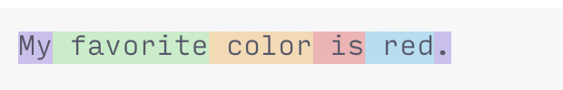

01. LLM 幻觉与 Agent：软件工程师需要的原理#
学习目标：沿着“问题—方案—新边界”的链路，理解 LLM 为什么能够生成内容、为什么仍会幻觉，以及 Agent 为什么需要工具、状态、权限和验证。建议阅读 75～90 分钟。
1. 先看完整链路#
与其把 Token、Transformer、RAG、MCP 和 Skill 记成一组互不相关的名词，不如先问一个连续的问题：怎样让机器从文本中学习规律，最后完成一项可以验证的软件任务？
原始文本无法直接参与神经网络计算
→ 切成 Token 并转换为编号
→ Token 编号没有语义和顺序
→ 加入 Embedding 与位置信息
→ 每个位置还需要结合上下文
→ 使用 Self-attention 和 Transformer
→ 模型需要一个可规模化的训练与生成目标
→ 预测下一个 Token
→ 合理续写不等于事实核验
→ 产生幻觉、遗漏和推理错误
→ 引入检索、工具和 Agent 获取外部反馈
→ 工具又带来误用、越权和虚假完成风险
→ 引入权限、沙箱、验证器和人工验收每一步解决一个问题，也留下一个边界#
这条链上的每个概念都解决了前一阶段的某类问题，却没有让此前的限制全部消失。大语言模型（Large Language Model，LLM）可以从大量数据中学到事实、代码模式和推理结构，但它最基本的生成目标仍是根据已有 Token 预测下一个 Token，生成时也不会自动连接事实数据库、编译器或真实运行环境。
因此先记住三件事：
- 语言流畅度来自强大的模式学习，不等于事实已经核实；
- 模型内部概率反映“哪个 token 更适合接在这里”，不等于“这项事实有多可信”；
- 工具、检索和 Agent 循环能提供外部反馈，但工具可能失败，模型也可能误读反馈。
软件工程里的实用结论是：不要试图从措辞或自信程度判断正确性，要让输出落到编译、测试、来源、运行结果和人工审查上。
2. 模型内部：文本怎样变成下一个 Token#
2.1 问题一：原始文本怎样变成可计算的输入#
神经网络处理的是数值张量，不是直接处理屏幕上的字符串。最简单的做法可以是按字符切分，但序列会很长；也可以按完整单词切分，但词表会很大，新词、拼写变化和代码标识符很难覆盖。
Tokenization（分词或标记化）在两者之间做折中：把文本或代码切成来自有限词表的 Token。Token 可能是一个词、词的一部分、空格与单词的组合、标点、代码符号或字节序列。随后 Tokenizer 把每个 Token 映射为整数 ID，输入可写为：
Tokenization 的结果与边界#

图：同一句英文被切成多个 token，空格常与后面的单词一起编码。不同模型和 tokenizer 的切分方式可能不同；可在 OpenAI Tokenizer 说明中替换为中文、代码和特殊符号继续观察。
Tokenization 还没有解决什么#
Tokenization 解决了“怎样把开放形式的文本转换成有限编号序列”，也决定了上下文长度和计算成本怎样计算。但它不是无损的语言理解：一个长标识符可能被拆成很多片段，不同语言的平均 Token 数也可能不同。
更重要的是，ID 只是一张词表里的编号。编号 1200 并不比 300 具有更多语义，因此还需要把离散编号转换为模型能够学习的连续表示。
2.2 问题二：编号怎样表示语义与顺序#
Embedding（嵌入）为每个 Token ID 查询一个可训练向量。训练过程中，在相似上下文中出现的 Token 可以形成某些相近的表示方向，使模型能够处理比离散编号更丰富的关系。
但只给出一组 Token 向量仍然不知道先后顺序。“dog bites man”和“man bites dog”包含相同 Token，含义却完全不同，因此还要加入 positional information（位置信息）。简化后的初始表示是：
E[x_i] 是第 i 个 Token 的 Embedding，P_i 表示它的位置。实际模型可能使用不同的位置编码或旋转位置机制，这里只保留共同作用：让模型能够区分 Token 内容与排列位置。
Embedding 和位置信息解决了“Token 是什么、位于哪里”，却仍没有解决“它在当前句子里是什么意思”。同一个初始 Token Embedding 出现在不同上下文中时，需要从周围 Token 获取不同信息，于是自然引出上下文交互机制。
2.3 问题三：每个位置怎样结合上下文#
在 Transformer 之前，循环和卷积结构已经能够处理序列，但循环结构通常按时间步推进，不利于训练阶段的大规模并行，远距离信息也需要沿多个步骤传播；卷积则需要通过多层扩大感受野。原始 Transformer 论文用 Attention 作为主要序列交互机制，缩短了不同位置之间的信息路径，并让同一层内各位置的计算更容易并行。
Self-attention（自注意力）要解决的问题是：对于当前位置，应该从序列中的哪些位置取回多少信息。可以先建立一个直觉——代词需要寻找指代对象，代码中的函数调用需要联系声明和参数，而这些相关位置不一定相邻。
Attention 的直觉图#
图：可先把 attention 理解为“让一个位置从相关位置取回信息”。图中的箭头只是建立直觉；真实模型通过多头 Q、K、V 运算形成连续权重，并不直接画出人类可读的语义箭头。来源：3Blue1Brown。
Q、K、V 怎样交换信息#
每个位置的表示经过不同矩阵变换，得到 Query、Key 和 Value：
可以把 Query 理解为“当前位置想找什么”，Key 表示“各位置可按什么特征被匹配”，Value 则是匹配后真正取回的信息。简化公式是：
公式中的四个部分#
其中：
QK^T衡量不同位置之间的相关性；sqrt(d_k)防止数值过大导致 softmax 过度饱和；M是因果掩码，使自回归模型不能看到未来 token；- 权重乘以
V后得到融合上下文的表示。
Self-attention 仍然没有解决什么#
多头注意力允许模型在同一层学习多组不同的匹配方式；Transformer 还会组合前馈网络、残差连接和归一化，并堆叠多层逐步更新表示。
Self-attention 改善了上下文交互，却没有自动解决以下问题：
- Attention 权重是计算中的相关性，不等于人类可读的因果解释；
- 基础全注意力的计算和存储成本会随序列长度快速增长；
- “信息位于 Context 中”不代表模型一定有效使用；
- 模型得到的是上下文表示，不是事实数据库、类型系统或程序执行结果。
现在模型已经能够把一段上下文变成丰富表示，但还需要回答两个问题：训练数据中的正确目标从哪里来，以及生成时怎样从表示得到完整序列。
2.4 问题四：怎样规模化训练并生成完整序列#
为海量文本逐句编写人工标签并不现实。Autoregressive next-token prediction（自回归的下一个 Token 预测）提供了一种可规模化的自监督目标：文本本身就提供答案，给定前面的 Token，后一个 Token 就是训练目标。
生成序列的联合概率可以分解为一连串条件概率：
从 logits 得到下一个 Token#
训练时，因果掩码保证每个位置只能使用前文；生成时，模型产生一组 logits，经 softmax 变成下一个 Token 的概率，选择或采样一个 Token 后再继续下一步：
tau 是 temperature。降低 temperature 通常让输出更集中，较高的 temperature 则增加多样性。它改变的是候选 Token 的分布，不会把错误知识变成正确知识。
规模化训练留下的根本边界#
Next-token prediction 的优势很关键：训练信号可以从大规模原始文本中自动获得，同一个目标还能学习语言、事实模式、代码结构和部分推理规律。但它也留下一个根本边界：训练目标直接提高语料中后续 Token 的预测概率，并没有要求每句话在外部世界中经过核验。 即使某个 Token 概率最高，后续陈述也可能没有事实依据。
从 Transformer 到下一个 Token#
图：Transformer Explainer 把 embedding、Q/K/V、多头注意力、MLP 和下一个 token 概率放在同一视图中。点击图片可进入浏览器内运行的 GPT-2 small 演示；该模型适合解释基础结构，不代表当前大型模型的全部实现。来源：Georgia Tech 项目与 IEEE VIS 2024 Poster。
继续交互探索#
可使用以下可视化辅助理解：
- OpenAI Tokenizer：比较自然语言、中文和代码的 token 切分；
- 3Blue1Brown：Attention in transformers：按动画顺序理解注意力；
- Transformer Explainer：交互观察 GPT-2 small 的 token、attention 和采样；
- The Illustrated GPT-2：理解 decoder-only Transformer；
- LLM Visualization：以三维方式观察层、向量和注意力的直观流动。
上一节的每一步都解决了真实问题：Token 让文本可计算，Embedding 表示内容与位置，Self-attention 聚合上下文，自回归目标让训练能够扩展到海量数据。但这些机制共同优化的仍然是“生成合适的序列”，不是“对外部事实负责”。幻觉正是从这个尚未解决的边界开始。
3. 从设计边界理解幻觉为什么产生#
本文把“模型生成了缺乏依据、与事实或给定材料不符的内容”称为幻觉。实际使用中还应同时关注推理错误、遗漏和需求误解，因为它们会造成相同的工程后果。
幻觉不是由单一缺陷造成的。训练目标、数据、上下文利用、对齐方式和自回归过程分别解决了不同问题，也分别留下了不同失败路径。
3.1 边界一：预测合理续写不等于核验事实#
Next-token prediction 使模型能够从海量未标注文本中学习，却直接优化的是对训练语料后续 Token 的预测。训练数据中常见的 API 写法，可能比某个具体版本的真实接口更容易被生成；一个结构完整的解释也可能比“我不知道”更符合语言模式。
模型参数可以包含大量事实模式，但基础生成过程没有强制执行“查询来源—比对证据—确认版本”的步骤。这就是为什么降低 temperature 可能让错误答案更稳定，却不能把它变成正确答案。
3.2 边界二：参数知识不是可查询、可更新的数据库#
大规模预训练解决了“怎样让模型获得广泛模式和背景知识”，但训练材料可能包含旧版本文档、错误帖子、互相冲突的示例、重复内容和知识时间边界。训练过程把这些规律压缩进参数，并没有建立一个能按主键精确查询、显示出处和实时更新的数据库。
因此，“模型曾在训练中见过”不等于它能准确取回，也不等于内容仍然适用于当前版本。检索和外部文档可以缓解知识缺失与过时，后面还会看到，它们也会引入检索错误、来源质量和权限问题。
3.3 边界三：提供更长上下文不等于模型有效使用#
Context 解决的是“如何把当前任务资料直接提供给模型”，因此用户可以补充平台、版本、失败输入和约束，不必完全依赖参数知识。但上下文机制仍有三个环节可能失败：相关材料没有被选入、进入后与其他内容冲突，或者虽然存在却没有被模型有效利用。
当必要信息缺失时，模型会使用常见模式补齐空白；当上下文很长时，关键条件也可能被无关日志淹没。扩大 context window 提高了容量，却没有自动完成检索、排序、去重和约束维护。
长上下文仍可能对位置敏感#
图：经典的 “Lost in the Middle” 实验中，答案材料位于 20 份文档的开头或结尾时表现较好，位于中间时明显下降。图中是 GPT-3.5-Turbo-0613 在特定多文档问答设置下的结果，不能据此断言所有当前模型都有相同幅度；它证明了“长上下文可能存在位置敏感”这一失败模式。来源：Liu 等，TACL 2024，Figure 1。
3.4 边界四：让模型更有帮助可能鼓励猜测与迎合#
预训练模型还需要通过指令训练、偏好优化和行为规范，才能更好地理解用户意图、拒绝危险请求并给出有用答案。这解决了“会续写但不一定会协助”的问题，却可能产生新的取舍：模型在信息不足时仍尝试完成回答，或者顺从用户问题中的错误前提。
OpenAI 2025 年的研究指出，很多准确率评测把“不回答”记为零分，却允许猜测偶尔得分，从而形成“猜测比承认不知道更划算”的激励。其 SimpleQA 示例是：
| 结果 | gpt-5-thinking-mini | OpenAI o4-mini |
|---|---|---|
| 弃答率 | 52% | 1% |
| 准确率 | 22% | 24% |
| 错误率 | 26% | 75% |
这组数据只对应特定模型和 SimpleQA，不是通用幻觉率。它说明的是评价指标的取舍：只看准确率时，o4-mini 高出 2 个百分点，但错误率也明显更高。
对齐也可能产生迎合#
图：在 2023 年五个助手版本和固定挑战语句的实验中，模型可能在原本答对后承认不存在的错误，甚至改成错误答案。该实验说明迎合行为确实存在，不代表 RLHF 必然导致迎合，也不能代表 2026 年模型的当前比例。来源：Sharma 等，ICLR 2024，Figure 2。
更好的诚实性训练、允许弃答以及对不确定性的校准可以降低这种倾向，但不能替代事实来源和外部验证。
3.5 边界五：自回归生成会把早期错误带入后文#
自回归生成解决了“怎样逐步生成任意长度序列”，代价是模型每一步都以已经生成的内容为条件。前面产生的错误 Token 会进入后续上下文，一个不存在的 API 名称可能继续诱导模型编造参数、返回值和示例，最终形成结构完整但整体不存在的方案。
错误怎样滚雪球式累积#
图：GPT-4 先错误判断 9677 不是质数，随后给出同样错误的因式分解来维护前一结论；在独立会话里询问关键因子时，它又能识别该主张不成立。单个示例不能给出一般发生率，但清楚展示了早期承诺怎样约束后续生成。来源：Zhang 等，2023，Figure 1。
3.6 边界六：进入软件环境后，错误扩展到整个系统#
检索、工具和 Agent 可以把部分语言主张变成外部观察，例如读取真实源码、查询官方文档或运行测试。这解决了“模型只能依据参数和文字继续猜”的问题，却把失败面从模型扩展到了 harness、工具、环境和验证设计。
Coding Agent 可能：
- 声称运行了实际没有运行的测试；
- 把 Apple Clang 当作 GNU GCC；
- 只运行测试子集，却报告“全部通过”；
- 误读退出码、截断日志或缓存结果；
- 在报错位置增加
if，让原始错误不再表现； - 修改测试、配置或依赖来迎合实现。
这些问题不都属于狭义的“模型编造事实”，但都会形成“Agent 看起来完成了，真实系统状态却不支持该结论”的风险，也不能只靠要求“不要幻觉”解决。
3.7 为什么接下来需要学习 Agent#
降低幻觉可以从两侧进行：模型侧改进数据、训练目标、对齐和不确定性表达；系统侧则引入高质量 Context、检索、工具、权限和独立验证。个人使用 Coding Agent 时，能够直接控制的主要是系统侧。
因此下一章不把 Agent 描述成“更聪明的模型”，而把它看成一种反馈系统：模型提出候选行动，环境返回观察，运行框架维持循环，治理机制限制风险，验证器判断结果。工具让错误更容易暴露，却不会自动保证正确；这正是后续每个 Agent 概念出现的原因。
4. 从 LLM 到 Agent 系统#
4.1 Agent 与普通聊天的区别#
本文采用一个实用定义：Agent 是在明确边界内，围绕目标选择步骤、调用工具、读取环境反馈并决定继续或停止的系统。 不同机构对 Agent 的边界并不完全相同，因此应关注系统实际拥有的能力和权限，而不是产品名称。
普通聊天：输入 → 生成回答
固定工作流：输入 → 预先定义的步骤 A → 步骤 B → 输出
Agent：目标 → 观察 → 计划 → 调用工具 → 读取结果
↑ ↓
└────── 修正、继续或停止 ──────┘4.2 为什么模型之外还会出现这么多概念#
假设你对聊天模型说：“请修复这个大型 C++ 仓库里偶发的崩溃。”模型也许能解释常见的内存问题，却还不能独立完成任务：
- 它不知道仓库里有哪些文件，也看不到真实报错；
- 它不能自行执行搜索、编译器或调试器；
- 一次调用装不下整个仓库和不断增长的运行日志；
- 即使找到修改方案，也没有权限边界和独立验收。
Agent 领域的大多数名词，正是为这些缺口逐层出现的。它们不是都在增强“智能”，而是在不同角度补齐一个可工作的系统：
一个 Agent 系统怎样形成闭环#
flowchart LR
U["任务与约束"] --> C["上下文：此刻知道什么"]
C --> M["模型：判断下一步"]
M --> T["工具：对环境采取动作"]
T --> O["观察：文件、日志、退出码"]
O --> C
M --> R["候选结果"]
R --> V["验证器：结果是否真的正确"]
S["规则与 Skill：应该怎样做"] --> C
ST["Session、Memory、Compaction：怎样延续"] --> C
G["Permission、Approval、Sandbox、Hook：允许怎样做"] --> T
Harness 把模型与系统各层组合起来#
用户通常通过 client（客户端，例如 CLI、IDE 或网页）发起任务；provider / API（模型服务）提供模型；处在中间的 harness / runtime（运行框架）负责组装上下文、调用模型、执行工具、保存状态并控制循环。模型负责提出下一步，harness 负责让整个过程真正运转。
这也解释了为什么“使用同一个模型”不一定得到相同结果：不同 Agent 产品可能使用不同的项目规则、工具、上下文压缩、权限和停止条件。比较内部模型能力时，应尽量固定 harness、Prompt、工具、权限和预算。
Harness 中的工具反馈循环#
图：模型提出工具调用，运行框架在受控环境中执行，再把结果送回模型形成循环。图中 Responses API、Shell 和托管容器是 OpenAI 的一种具体实现；其他 Coding Agent 可以使用不同组件，但“模型提出动作—环境执行—结果回流”的基本分层相似。
4.3 沿着一次任务理解各个概念#
4.3.1 问题一：模型此刻应该知道什么#
大型仓库无法整体塞进每一次模型调用，于是首先需要管理信息。
- Instructions / Rules（指令与规则）规定任务目标、禁止事项和项目惯例，例如“不修改测试”和“使用 CMake 的标准构建命令”。
- Context（上下文）是本次模型调用实际看得到的内容，例如任务要求、相关源码、错误日志和刚才的工具输出。
- Session / State（会话与状态）把多轮工作连接起来，记录已经读过什么、尝试过哪些假设以及任务进行到哪一步。
- Memory（记忆）把值得跨任务保留的信息保存下来，例如长期有效的项目约定；它不是当前对话全文的永久副本。
- Compaction（压缩）在上下文将满时摘要、裁剪或重组较早内容，让长任务能够继续。
这些概念解决的是不同时间尺度的问题：规则告诉 Agent 应该遵守什么，Context 决定模型 这一刻知道什么，Session 维持 本次任务如何延续，Memory 服务于 以后还要记住什么，Compaction 则处理 信息太多时保留什么。
长任务需要持续维护信息质量#

图：单轮提示主要组织当前输入；Agent 则需要在每轮从指令、文档、工具、记忆和消息历史中选择高价值内容，并把工具结果继续带入后续循环。图中的 curation 是筛选和组织过程，不保证被保留的信息一定正确。来源：Anthropic，2025。
Context Engineering 的边界#
“会话中出现过”不代表信息仍在当前 Context；“写入 Memory”也不代表每次都会被正确检索。Compaction 还可能遗失约束、把假设压缩成事实。因此，长任务不能只追求更大的 context window，还要持续维护信息质量。
4.3.2 问题二：模型怎样接触真实环境#
只有文本生成时，模型可以说“这段代码应该能编译”，却不能证明它。Tool / Function Calling（工具或函数调用）由此出现：模型用结构化参数请求读文件、搜索符号、运行编译器或调用 API，再把结果作为新的观察送回上下文。
工具增多以后，每种 Agent 都单独适配 GitHub、数据库和内部服务会产生大量重复连接代码。MCP（Model Context Protocol）解决的是连接标准化问题：MCP Server 可以用统一协议暴露 tools、resources 和 prompts，Host 中的 MCP Client 负责连接它。MCP 不会凭空提高模型智力，也不代表服务已经可信或获得授权。
相关概念是在这条连接链上继续细分：
- Connector 是面向某个外部服务的适配层，例如连接 GitHub 或数据库；它可能使用 MCP，也可能使用产品自己的 API。
- Retrieval / RAG 先从外部资料中检索相关内容，再放入 Context，解决参数知识不全或过时的问题。
- Embedding / Vector Database 常用于按语义相似度检索候选资料，但“相似”不等于“正确”。
- LSP（Language Server Protocol） 给 Coding Agent 提供定义、引用、符号和诊断等代码语义能力，比纯文本搜索更了解语言结构。
MCP 统一连接方式，不负责正确性#
图：MCP Inspector 可以连接 MCP Server，查看 resources、prompts 和 tools，填写参数、发起 tools/call 并观察结果与通知。它展示的是协议交互和调试界面，不表示所有 MCP Server 都可信，也不自动授予 Agent 调用权限。来源：MCP Inspector 仓库。
4.3.3 问题三：有了工具，Agent 是否知道正确用法#
“能运行编译器”不等于“会系统地诊断未知崩溃”。如果每次都在任务 Prompt 中重新解释“先复现、寻找第一次非法状态、再做最小修复”，既冗长又容易遗漏，于是出现了不同层次的方法复用：
- 任务 Prompt 描述这一次要完成什么；
- 项目 Rules 保存只适用于当前仓库的约定；
- Skill 封装可跨任务复用的知识、步骤、示例，有时还附带脚本和参考资料。
因此，Skill 教 Agent 怎样做，Tool 让 Agent 能够做。一个 C++ 缺陷诊断 Skill 可以规定先运行 Sanitizer、区分错误产生位置与检测位置；真正执行编译和 Sanitizer 的仍然是 Tool。Skill 主要影响模型的选择过程，并不自动保证模型遵守流程或结果正确。
Skill 提供方法，Tool 提供动作#
图：一种具体的 Skill 实现会保存元数据和文件包，在任务开始前把 Skill 放入运行环境，再由模型按需读取说明和执行脚本。Skill 并不是模型参数的一部分，也不等于一个可执行 Tool；不同产品的发现和加载机制可能不同。
4.3.4 问题四：怎样把“提醒”变成真正的控制#
Prompt 中写“不要联网、不要修改测试”仍然只是自然语言。要控制真实风险，需要把不同强度的机制组合起来：
- Hook 在特定事件发生时自动执行，例如代码编辑后运行格式化，或工具调用前记录审计信息；
- Permission 描述哪些操作允许、拒绝或需要询问；
- Approval 是高风险操作前由用户作出的明确授权；
- Sandbox 在文件系统、进程和网络层真正实施隔离。
四者作用不同：Hook 解决“某个时点自动做什么”，Permission 解决“策略上允许什么”，Approval 解决“谁来批准例外”，Sandbox 解决“系统实际上能不能越界”。例如 Prompt 可以要求不要写测试目录，Permission 将该目录标为只读，Sandbox 阻止写入，而 Hook 在修改后检查 diff；这比重复四遍“请不要修改测试”可靠得多。
4.3.5 问题五：任务超过一个 Agent 的承载能力怎么办#
长任务首先应通过更好的 Context、阶段计划和 Checkpoint 解决，而不是立即增加 Agent。当调查可以拆成相互独立的工作包时，才需要协作概念：
- Subagent 在独立或较隔离的上下文中完成一个子任务，避免所有材料挤进主 Agent；
- Multi-Agent 表示多个 Agent 循环共同完成任务；
- Orchestrator 分配工作、管理依赖、限制预算并汇总结果；
- Git Worktree 为并行代码修改提供彼此隔离的工作目录；
- Checkpoint 保存可以恢复的任务或工作区状态，便于比较和回退。
它们解决的是上下文隔离、并行和协作问题，不是正确性问题。多个 Agent 可能共享模型和错误前提，因此“一致同意”不能替代编译器、测试和人工审查。第 7 节会进一步说明何时值得使用多 Agent。
4.3.6 问题六：Agent 说完成了，谁来判定#
Agent 的最后一句话只是主张。Verifier / Evaluator / Oracle（验证器、评估器或判定标准）把“完成”变成外部可检查的证据，例如：
- 编译器证明目标配置能够构建；
- 原始复现和回归测试检查行为；
- Sanitizer 检查已覆盖路径上的动态错误；
- Git diff 检查是否越出允许范围；
- 人工审查确认实现符合真实意图。
验证器最好由任务外部定义，并与 Agent 的可修改范围隔离。否则 Agent 可能通过弱化测试或改变评分规则获得“通过”，却没有解决真实问题。第 5 节会继续讨论工具反馈为什么有用但仍不充分。
4.3.7 问题七：怎样安装、分发和自动运行这些能力#
当 Rules、Skills、Hooks、MCP 配置和 Subagents 越来越多，需要一种产品层面的打包与分发方式，这就是 Plugin 常见的作用。Plugin 不是单一能力：它可能把若干扩展组合成一个可安装单元，因此应像代码依赖一样审查来源、脚本和权限。
Headless Mode 则解决运行入口问题：Agent 不依赖交互界面，可以从命令行、脚本或 CI 启动。它适合可重复任务和自动评估，但也意味着审批、超时和失败处理必须预先设计。
不同产品对 Skill、Plugin、Hook 和 Subagent 的文件格式及加载时机并不相同。Claude Code 的扩展机制总览区分了项目规则、Skills、MCP、Subagents、Hooks 和 Plugins；其工具参考区分了可执行工具与复用现有工具的 Skill。MCP 官方架构则说明了 Host、Client、Server 以及 tools、resources、prompts 的协议关系。
4.4 从七个角度重新观察同一个 Agent#
完成概念学习后，可以不按产品菜单记忆，而是每次从七个角度检查一个 Agent 系统：
| 观察角度 | 核心问题 | 相关概念 |
|---|---|---|
| 判断 | 谁在理解目标并选择下一步？ | Model |
| 信息 | 模型此刻看到什么，长任务如何延续？ | Instructions、Context、Session、Memory、Compaction、RAG |
| 方法 | 这类任务应该按什么经验完成？ | Rules、Skill |
| 行动 | 怎样读取或改变外部环境？ | Tool、MCP、Connector、LSP |
| 治理 | 哪些动作被提醒、拦截、审批或隔离？ | Hook、Permission、Approval、Sandbox |
| 协作 | 工作怎样拆分、隔离、汇总和恢复？ | Subagent、Multi-Agent、Orchestrator、Worktree、Checkpoint |
| 证据 | 谁证明结果符合真实目标？ | Verifier、Evaluator、Oracle、人工验收 |
Client、provider 和 harness 把这些层组合成用户实际使用的 Agent 产品；Plugin 负责把扩展能力打包分发，Headless Mode 则提供非交互运行方式。这样看时，每个概念都有自己的职责，不需要把所有名词都误认为“模型能力”。
4.5 用一次 C++ 缺陷修复把概念串起来#
假设任务是“修复 Linux 下偶发崩溃，但不得修改测试”：
- Client 把任务交给 harness，Rules 定义仓库边界，Skill 提供未知缺陷的诊断流程；
- harness 从 issue、源码和构建说明中选择 Context，Session 记录已排除的假设；
- 模型选择搜索、编译和调试动作；Tool 真正执行，LSP 帮助追踪符号，必要的外部资料可通过 MCP 或 Connector 获取；
- 工具输出成为下一轮 Observation；Context 过长时由 Compaction 保留关键证据，稳定的项目经验才进入 Memory；
从治理到独立验证#
- Permission、Approval 和 Sandbox 限制网络、目录与高风险命令，Hook 自动检查修改范围；
- 如果 Linux 与 Windows 调查可以独立，再由 Orchestrator 分给不同 Subagents，并用 Worktree 隔离修改；
- 最终由原始复现、测试、Sanitizer、diff 检查和人工 review 组成 Verifier，而不是让 Agent 自己宣布成功。
这条链中，缺少 Tool，Agent 只能建议；缺少 Context，它会猜测；缺少 Skill，它可能低效试错；缺少治理机制，它可能越界；缺少 Verifier，则无法区分真实修复与掩盖症状。
基础篇只需要理解各概念为什么出现、位于哪一层以及不能保证什么。具体配置会随产品快速变化，应查阅对应版本的官方文档，并在 02：Coding Agent 实战手册 中结合实际任务学习。
ReAct 展示了推理、行动和环境观察交错进行的基本范式；Anthropic 的工程说明 则明确区分固定工作流和由模型动态决定路径的 Agent。
5. 工具反馈为什么有用，又为什么不充分#
工具把模型的部分主张变成可观测结果：
“这段代码应该能编译” → 编译器退出码和诊断
“这个 API 存在” → 官方文档或实际导入
“错误已修复” → 原始复现和回归测试
“没有越界” → 覆盖目标路径的 ASan 运行工具反馈必须落到可执行验收#
图：单轮任务可以直接评分回复；Agent 会通过多轮工具调用改变环境，因此应检查最终环境和可执行测试，而不是只检查最后一句 “I did it!”。来源：Anthropic，2026。
反馈闭环仍会在哪些位置失败#
这会显著降低“只凭语言继续猜”的风险。但反馈闭环仍可能在任意环节失败：
- Agent 选择了错误工具或错误参数；
- 测试本身没有覆盖问题；
- 工具输出被截断、缓存或误读；
- Agent 修改了判定器；
- 环境与真实目标环境不同；
- 工具只证明局部性质，Agent 却把结论扩大到全部场景。
因此应把 Agent 看作“会使用工具的候选方案生成者”，而不是因使用工具就自动可信。
6. 选择最低必要自动化程度#
从简单到复杂依次考虑：
确定性程序 → 普通聊天 → 固定工作流 → 单 Agent + 工具 → 多 Agent| 方案 | 适合任务 | 主要优点 | 主要限制 |
|---|---|---|---|
| 确定性程序 | 格式转换、固定计算、规则校验 | 便宜、稳定、易测试 | 不擅长模糊语义 |
| 普通聊天 | 解释、改写、头脑风暴 | 交互简单 | 用户负责推进和验证 |
| 固定工作流 | 步骤已知、分支有限 | 可预测、易审计 | 对新情况适应较弱 |
| 单 Agent | 路径未知但目标可验证 | 能根据反馈调整 | 成本和错误面增加 |
| 多 Agent | 工作包真正独立、并行收益明显 | 扩大覆盖面 | 协调、重复和相关性错误 |
什么任务才适合交给 Agent#
任务适合交给 Agent，通常需要同时满足：
- 目标和允许范围能够说清；
- 完成结果可以由测试、来源或人工验收；
- 路径存在不确定性，固定脚本很难覆盖；
- 错误能在产生严重后果前被阻断；
- 使用的数据、工具和操作已经授权。
哪些任务不应直接交给高自治 Agent#
以下情况不应直接交给高自治 Agent：
- 付款、删除、发送、生产变更等不可逆操作无人审批；
- 输入包含未经授权的内部代码、日志、凭证或个人数据；
- 连“什么算正确”都无法定义；
- 规则稳定，十几行脚本就能完成；
- Agent 必须获得远超任务需要的系统权限。
7. 单 Agent 与多 Agent#
多 Agent 不等于多个独立真相源。多个 Agent 可能共享模型、训练数据、搜索结果和错误前提，从而形成一致但错误的结论。
多 Agent 的价值是扩大覆盖面，不是投票求真#
图：一个 orchestrator-worker 实例。Lead Agent 使用记忆和工具拆分任务，多个搜索 Subagent 在各自循环中并行工作，再由引用 Subagent 和 Lead Agent 汇总。该架构适合宽度优先、可独立搜索的研究任务，不说明一般编码任务也应采用同样数量的 Agent。来源：Anthropic，2025。
什么时候并行才值得#
只有满足以下条件时才考虑并行：
- 工作包的输入和输出边界明确；
- 大部分时间不需要写同一文件或共享可变状态；
- 各工作包可以独立验收；
- 并行节省的时间高于协调、合并和额外 token 成本。
适合并行的是“调查 Linux 行为”和“调查 Windows 行为”；不适合的是让三个 Agent 同时修改同一个核心函数，再用投票决定哪份正确。
自查问题（续）#
- 测试通过能证明什么，不能证明什么？工具反馈还可能在哪些位置失真？
- 什么条件下固定工作流比 Agent 更合适？
- 面对未知 C++ 崩溃，为什么 Skill 不能替代 Tool，MCP 不能替代权限控制，Hook 也不能替代 Verifier？
- Prompt、Permission、Approval、Sandbox 分别怎样约束“禁止联网”，为什么只写 Prompt 不够？
- 同一个模型在两个 harness 中结果不同，可能有哪些原因？
- 为什么另一个 Subagent 的赞同不能代替独立验证？
小练习#
练习一：沿模型内部链路观察一行代码#
把下面一行代码输入 OpenAI Tokenizer，记录它怎样拆分标识符、空格和符号：
if (index >= buffer.size()) return;然后用自己的话回答：
- Tokenizer 提供了什么，尚未提供什么？
- Embedding、位置信息和 Self-attention 会依次加入什么能力？
- Next-token prediction 可以学到哪些代码模式？
- 上述哪一步能够证明这段边界检查符合真实需求？
第 4 问的答案应是“都不能”。它们解释模型怎样生成代码；需求、运行行为和回归风险仍需要外部上下文、工具和验证器。
练习二：选择最低必要自动化程度#
为下面任务分别选择“脚本、聊天、固定工作流、单 Agent、多 Agent”，并写出判定器：
- 将 500 个日期统一为 ISO 8601；
- 解释一条公开的 CMake 错误；
- 在公开仓库中调查一个偶发崩溃并提交候选补丁；
- 比较三个公开编译器对同一语言特性的实现；
- 自动删除服务器上的过期构建物。
参考判断：第 1 项优先脚本；第 2 项通常聊天足够；第 3 项适合单 Agent 加测试工具；第 4 项在来源和实验可独立时可并行；第 5 项即使使用 Agent，也必须先预览、限制路径并人工批准删除。
练习三：画出自己正在使用的 Agent#
再选择自己正在使用的一个 Coding Agent，画出它的模型、harness、项目规则、Skill、Tool、MCP、权限层和验证器。无法确认的部分标记为“未知”，不要根据产品宣传自行补齐。
下一步阅读 02：Coding Agent 实战手册。